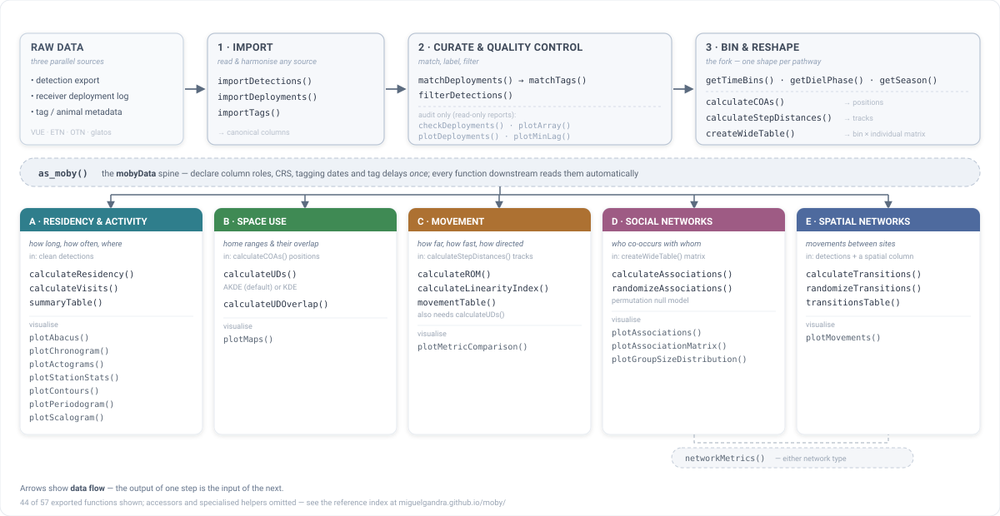

Streamlined analysis and visualisation of passive acoustic telemetry data.
Acoustic telemetry has become one of the most powerful tools for studying the movement, behaviour and ecology of aquatic animals. Modern receiver arrays can generate millions of detections from fish, sharks, rays and other tagged species — but turning those raw records into robust ecological inference remains slow and error-prone.
moby provides a reproducible, end-to-end workflow for acoustic telemetry data, taking you from raw receiver exports through quality control and filtering to residency, home ranges, movement, social structure, and publication-ready figures.
At the heart of the package is the lightweight mobyData object. Once you import your detections with as_moby(), details such as column mappings, coordinate reference system, tag transmission delays and receiver deployments are stored alongside the data, so you describe your dataset once and that information is reused consistently throughout the pipeline. Because a mobyData object simply extends a standard data.frame, it remains fully compatible with familiar R workflows, and every moby function also accepts an ordinary data frame.

What moby does
-
A consistent data model — declare column roles and metadata once with
as_moby()and carry them through the whole pipeline. -
Import & quality control — read detections, tags, and receiver deployments (VUE, ETN, OTN, glatos, …); match detections to deployment windows; flag false detections (Pincock short-interval /
min_lag) and metadata inconsistencies. - Temporal & spatial classification — time bins, diel phase, season, and reproductive periods; centres of activity and least-cost (in-water) step distances.
- Residency, home range & movement — residency indices and visit events; kernel and autocorrelated (AKDE) utilisation distributions and their overlap; rates of movement and trajectory linearity.
- Social & movement networks — co-occurrence (association) and movement networks, permutation null-model tests, and network metrics.
- Publication-ready visuals — abacus plots, chronograms, actograms, contour plots, receiver-array and home-range maps, and network figures.
Installation
Install the current release from GitHub:
# install.packages("pak")
pak::pak("miguelgandra/moby")The package ships with an example dataset (rays) used throughout the documentation, so you can follow every tutorial without supplying your own data.
Documentation
- Package website — function reference and articles: https://miguelgandra.github.io/moby/
-
Getting started —
vignette("moby")(the Introduction to moby article). - Tutorials — step-by-step workflows under the website’s Articles tab: importing data, quality control, exploratory analysis, space use & home ranges, movement networks, and association networks.
-
Help pages — every function is documented, e.g.
?filterDetections,?calculateUDs.
Citation
If moby contributes to your work, please cite it:
citation("moby")A companion methods paper is in preparation; citation details will be added on publication.
Feedback & contributions
moby has been extensively tested, but real-world datasets and receiver systems are wonderfully diverse and may still surface edge cases. If something doesn’t behave as expected — or you have ideas to make it better — please open an issue or pull request on GitHub. Contributions are warmly welcome.
License
Released under the GPL-3 license.